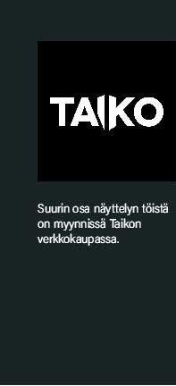

| yhteyttä luomassa
Poikkeustilassa koen tärkeäksi ottaa yhteyttä muihin ihmisiin muuten kuin lähikontaktissa. On ollut todella lohduttavaa huomata, miten pidämme yhtä ja tuemme toinen toisiamme suljetussa maailmassa. Virtuaaliset kanavat ja some on muodostuneet tärkeiksi yhteydenpidon välineiksi. Toivon, että tämä aika rohkaisisi ihmisiä hyödyntämään digitaalisia kanavia myös poikkeusolojen jälkeen.
Kaunetta tuomassa
Haluan tuoda valoa ja iloa teille kaikille näinä vaikeina aikoina.
Taiteen kokeminen ja kauneus ympärilläni antaa voimaa ja jaksamista. Se voi olla myös selvitytymiskeino tai tuoda lohtua ja turvaa. Huolen, pelon ja surun keskellä on ollut myös ilo huomata, miten poikkeustila voi imyös nspiroida luovuuteen.
Kodin huomassa
Päätin luoda virtuaalisen taidenäyttelyn kannustamaan ihmisiä pysymään kodeissaan ja suojelemaan itseään ja läheisiään virukselta. Käytetään luovuutta yhteydenpidon tavoissa, työn tekemisessä ja taiteen kokemisen tavoissa.
Ripustin taidenäyttelyn maaliskuussa Taiteilijatalo Gjutarsiin, josta otimme 360-valokuvat. Näyttelyssä vieraili perheeni lisäksi valokuvaaja.
|
 |
 |
Kiitos taiteen tukijat, ostajat, perhe, ystävät ja kanssataiteilijat. Teidän arvonne on mittaamaton.
Erityiskiitos Miika Anundille virtuaalinäyttelyn rakentamisesta.
Kiitos Duplio Aallon Katille ja Samille, Asuntomessu-kodin rakentajaperheelle, kenen kanssa olen tehnyt useiden kuukausien ajan yhteistyötä taidesuunnitelman parissa
Kiitos taideverkkokauppa Taikon asiantuntevalle ja ystävälliselle tiimille yhteistyöstä,
Kiitokset myös 360-panoraamakuvat ottaneelle Pasi Örnille (Pod Studio).
Riika Anundi
taiteilija ja muotoilija
Huhtikuussa 2020
Taiteilijatalo Gjutars, Vantaa
www.riikaanundi.com
facebook.com/TaiteilijaRiikaAnundi
instagram.com/riika_anundi |
 |
|